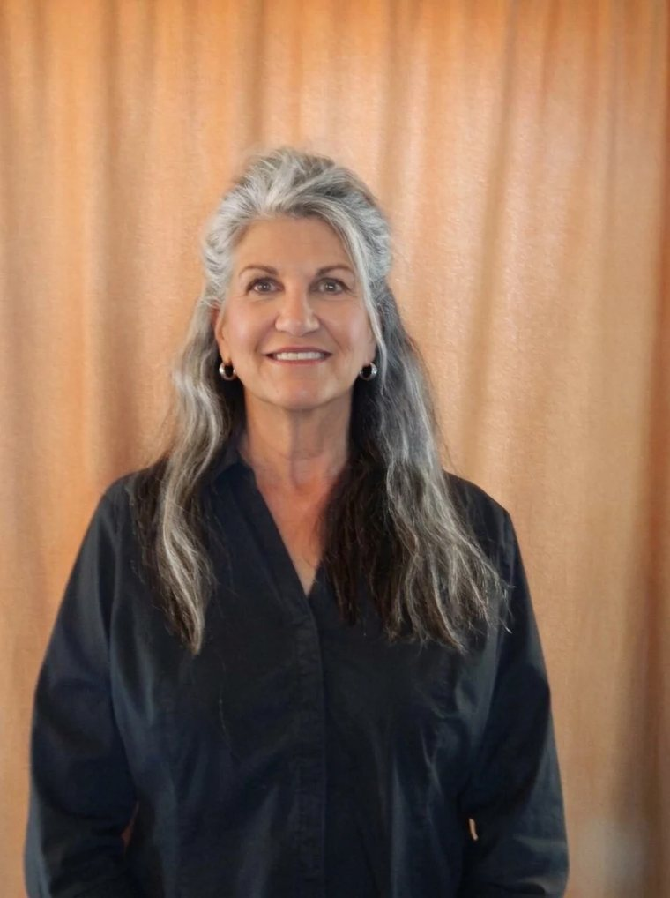

About the notary
Twenty-four years, one signature at a time
Therese A. Christopher — notary and paralegal since 2002, NNA-certified signing agent since 2011, working out of Larkspur, Colorado.
I have been a notary and a paralegal since 2002, and a Notary Signing Agent since 2011. I will travel thirty miles each way to your home or office, or any other meeting place you choose. I am reliable, friendly, and confidential, and I look forward to providing you with excellent service.
Therese A. Christopher — Notary Public, State of Colorado. Commissioned since 2002, in business as Red Horse Notary Services LLC since 2011.
Most of my work is loan signings for title companies and signing services along the I-25 corridor, from Castle Rock down through Monument to Colorado Springs. The rest is people: a power of attorney before surgery, a deed for a family selling the ranch, a will signed at a kitchen table on a Sunday. Field inspections are the newest part of the list, and they use the same skills the rest of the work does: showing up when promised, looking carefully, and writing down what is actually there.
What that means for you is simple. Documents get read before they get stamped, appointments happen when they are promised, and the package comes back right the first time.
Therese A. Christopher

The notary, on paper
- Commission
- Colorado, 2002
- Signing agent
- NNA, 2011
- Remote online
- RON certified
- Coverage
- E&O insured
- Verified
- Snapdocs, 300
- Field inspections
- Accepted
Ready when the document is.
Same-day requests go fastest by text.